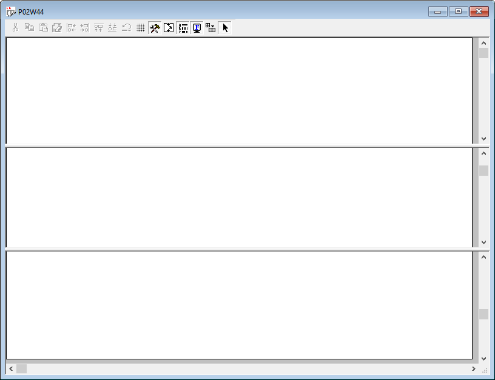

Die Bearbeitung eines Formulars kann über folgende Varianten gestartet werden:
ü Über jedes Formular, welches am Bildschirm ausgegeben werden kann, kann durch Drücken der rechten Maustaste ein Kontextmenü mit dem Eintrag "Formular bearbeiten" aufgerufen werden. Durch Anwahl eines darunter aufgeführten Formulars wird in der Folge der "easy-to-use" Formular Editor gestartet. An dieser Stelle wird der Button "Eigenständigen CWLPDFE aufrufen" zur Verfügung gestellt, durch den der WinLine Formular Editor "Professional" gestartet und das Formular geöffnet wird.
Hinweis
Der Eintrag "Formular bearbeiten" wird nur angezeigt, wenn der angemeldete Benutzer "Administrator" oder "Formularadministrator" ist.
ü Im WinLine Formular Editor wird über das Menü "Datei" der Punkt "Öffnen…" angewählt und eine Formular ausgewählt.
ü Im WinLine Formular Editor wird über die Formularliste eine Formular zur Bearbeitung geöffnet.
ü Im WinLine Formular Editor wird über das Menü "Datei" per Schnellauswahl ein Formular zur Bearbeitung geöffnet.

Im Kopf des Fensters wird der Formularname angezeigt und darunter die Buttonleiste der Formularbearbeitung (nähere Informationen entnehmen Sie bitte dem Kapitel "Die Buttonleisten").
Grundsätzlich ist jedes WinLine Formular in die folgenden Bereiche unterteilt:
ü Kopfbereich
Pro Seite wird der
Kopfbereich 1x angedruckt. Über Flags kann in vielen Formularen ein abweichendes
Druckbild aber der 2. Seiten angegeben werden.
ü Mittelteil
Pro Seite wird der
Mittelteil x Mal angedruckt, wobei die Anzahl der Wiederholungen von den
anzudruckenden Daten abhängig ist (z.B. von den Positionen in einem Beleg).
Sobald der Platz des Mittelteils ausgeschöpft ist wird automatisch der
Fußbereich gedruckt und ein Seitenumbruch durchgeführt. Welches Element wie
gedruckt werden soll wird über Flags definiert.
ü Fußbereich
Pro Seite wird der
Fußbereich 1x angedruckt. Über Flags kann in vielen Formularen ein abweichendes
Druckbild für die letzte Seite angegeben werden.